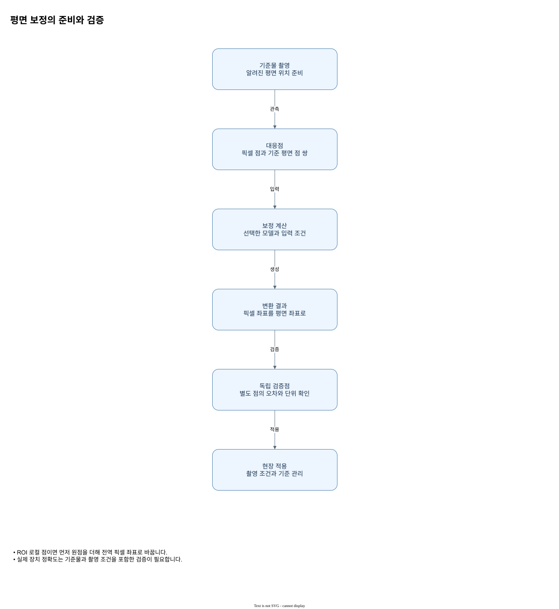

평면 변환과 검증
글로벌 픽셀 (x,y)에 호모그래피 H를 적용하여 X=(h₀₀x+h₀₁y+h₀₂)/(h₂₀x+h₂₁y+h₂₂), Y=(h₁₀x+h₁₁y+h₁₂)/(h₂₀x+h₂₁y+h₂₂)를 얻습니다. 결과는 보정이 저장한 길이 단위에서 요청 단위로 변환합니다. 역변환은 입력 단위를 보정 단위로 바꾸고 역행렬을 적용합니다. 평면 보정은 렌즈 왜곡을 자동 보정하지 않습니다.

판독 기준
- ROI 로컬 점이면 먼저 원점을 더해 전역 픽셀 좌표로 바꿉니다.
- 실제 장치 정확도는 기준물과 촬영 조건을 포함한 검증이 필요합니다.
PlanarCalibration은 매핑과 단위 값을 가집니다. Rust 공개 facade의 mapping(), unit() 및 C#의 Mapping, Unit으로 읽습니다. fit은 동일 개수의 대응점 최소 4개가 필요하며 퇴화 배치·역행렬 불가·비유한 값 등은 오류입니다. 변환 영역 바깥으로의 정확도는 이 조건에서 보장되지 않습니다.
평면 보정은 영상에서 측정한 픽셀 위치를 같은 평면 위의 물리 위치와 연결합니다. 네 쌍 이상의 대응점은 각각 같은 실제 점을 가리켜야 하며, 한 줄에 몰린 퇴화 배치처럼 투영 관계를 구분할 수 없는 경우에는 적합이 실패할 수 있습니다. 대응점의 순서가 어긋나도 각 숫자가 유한할 수 있으므로 입력 목록을 표로 검토하는 과정이 중요합니다.
호모그래피는 좌표를 분모로 나누는 투영식이므로 모든 픽셀에 일정한 배율 하나를 적용한다고 가정하지 않습니다. 예시의 아핀 관계 X=0.1x+1, Y=0.2y−2는 가능한 변환 중 하나이고 두 방향 배율도 다릅니다. 이 매핑의 입력은 글로벌 픽셀이며 렌즈 왜곡은 별도 모델의 책임입니다. 보정이 성공한 뒤 사용 영역 안에서 독립 보류점을 평가해 실제 사용 조건에 적합한지 판단하십시오.
적용 순서와 결과 판독
평면 보정은 영상의 픽셀 점과 같은 평면에서 측정한 세계 좌표 사이의 대응을 이용합니다. 입력 점의 개수뿐 아니라 어떤 픽셀이 어떤 세계점에 대응하는지가 중요하므로 두 배열을 서로 다른 순서로 정렬해서는 안 됩니다. 학습점에 잘 맞더라도 평면 다른 위치의 오차는 별도의 보류점으로 확인해야 합니다. ROI에서 얻은 로컬 점은 먼저 ROI 원점을 더한 전체 영상 좌표로 변환한 다음, 그 좌표계로 학습한 보정에 전달합니다.
| 확인 단계 | 판독과 조치 |
|---|---|
| 대응점 | 같은 물리 위치의 픽셀과 세계점을 짝짓습니다. |
| 점 배치 | 평면을 덮도록 놓고 퇴화한 배치를 피합니다. |
| ROI 결과 | 로컬 원점을 더해 학습 좌표계에 맞춥니다. |
| 보류점 | 학습에 쓰지 않은 점의 잔차를 확인합니다. |